AnyPortrait > マニュアル > Universal Render Pipeline
Universal Render Pipeline
1.3.5
「Universal Render Pipeline（URP）」は、Unity 2019.3から導入された新しいレンダリング方法です。
既存のLWRPを交換する「URP」は、より多くのプラットフォームとデバイスをサポートし2D、3D、VRとARなど、さまざまな種類のプロジェクトに適用することができます。
追加の説明については、以下のページを参照してて見ることをお勧めします。
- マテリアルライブラリ
- 「Shader Graph」でマテリアルを作成
- カスタムシェーダー
- About the Universal Render Pipeline Manual
Universal Render Pipeline設定しマテリアルを変更

「Window > Package Manager」を実行します。
（メニューの位置や名前はUnityのバージョンに応じて差があることがあります。）
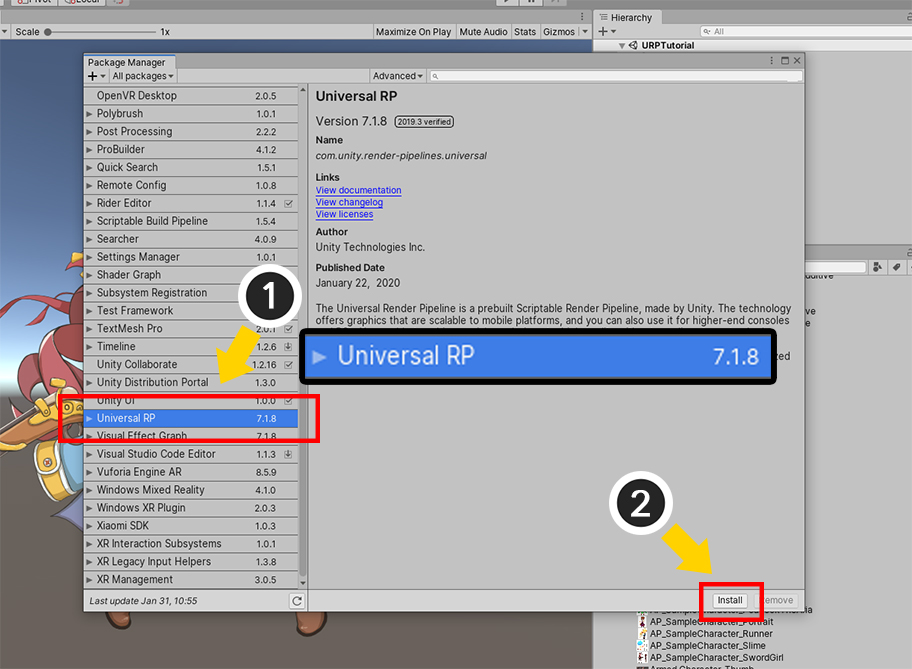
(1) 「Universal RP」パッケージを選択します。
リストにパッケージが見えない場合は、ロードに時間がかかりますので、少しアルゴされます。
(2) 「Installボタン」を押します。

URPパッケージがインストールされている場合、「Pipeline Asset」を作成し、レンダリングに適用する必要があります。
Assetsフォルダ内の右クリックをするか、Assetsメニューを選択して、「Create > Rendering > Universal Render Pipeline > Pipeline Asset（Forward Renderer）」を追加します。

「UniversalRenderPipelineAsset」が作成されました。
また、URPのレンダリング方法を定義する「基本Rendererアセット」も一緒に生成されます。
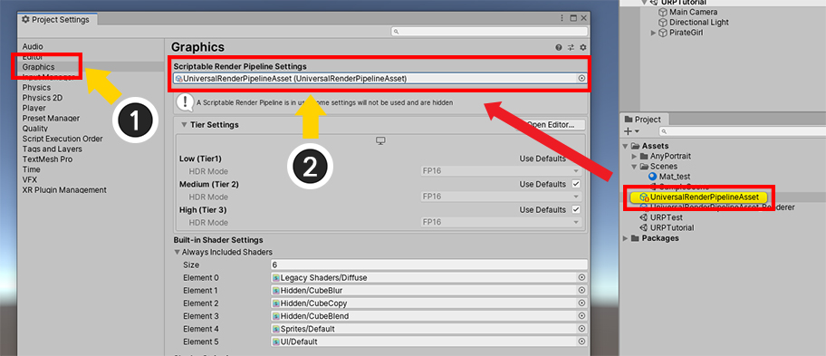
生成された「URP Asset」をプロジェクトに適用してみましょう。
(2) エディタメニューの「Edit > Project Settings」を開いて、「Graphics」の項目を選択します。
(2) 「Scriptable Render Pipeline Settings」の項目に先立って生成された「UniversalRenderPipelineAsset」を割り当てます。
URP方法でレンダリングが有効になったので、おそらくほとんどのマテリアルが正常にレンダリングされていないことです。
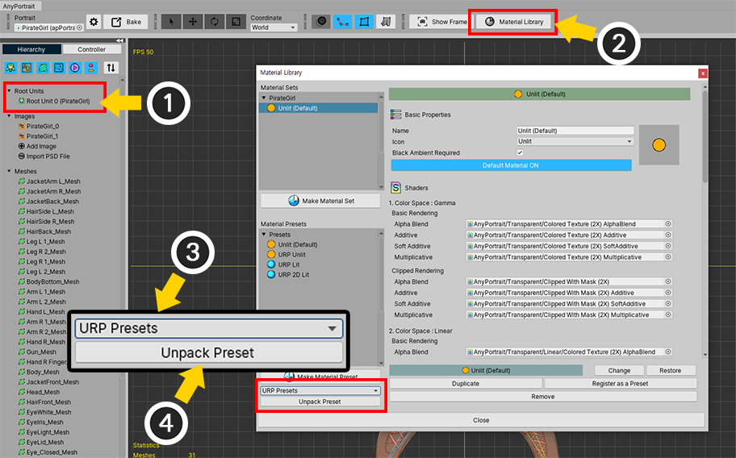
URPをサポートしているマテリアルをインストールして適用してみましょう。
(1) AnyPortraitエディタを開いて、「Root Unit」を選択します。
(2) 「Material Libraryボタン」を押します。
(3) インストールするパッケージを選択します。ここでは「URP Presets」パッケージを選択します。
(4) 「URP Presets」が選択された状態で、「Unpack Presetボタン」を押します。
「Unity 2021」以降のバージョンをお使いの場合は、「AnyPortrait v1.3.5」で追加された「URP（2021）Presets」をインストールしてください。
このプリセットは、既存のURPプリセットの機能をすべて含み、「Unity 2021」との互換性のために開発されました。
このプリセットの追加の説明は、このページの下部にあります。

パッケージがインストールされると、マテリアルライブラリを再実行する必要があります。
「OKボタン」を押して、「Material Libraryボタン」を押して再度開きます。
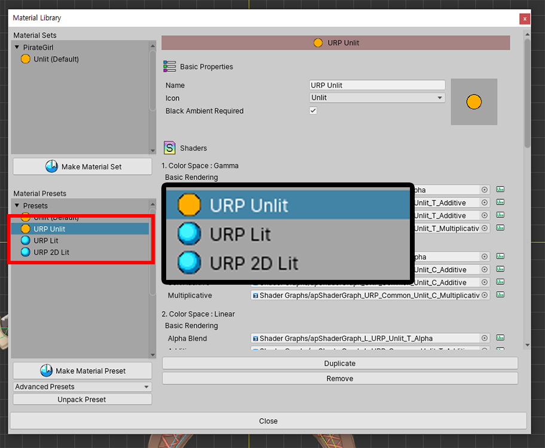
URPをサポートする3種のプリセットが追加されました。
- URP Unlit : URP環境での光の影響を受けずに、元の色が表示されます。
- URP Lit : URP環境での光の影響を受けます。
- URP 2D Lit : 2D Rendererが適用されたURP環境で2D Lightの影響を受けます。

追加されたプリセットを使用して、マテリアルセットを作ってみましょう。
(1) 「Make Material Setボタン」を押します。
(2) URPプリセットのいずれかを選択します。ここでは「URP Unlit」プリセットを選択しました。
(3) 「Selectボタン」を押します。

(1) 生成された「URP Unlit」マテリアルセットを選択します。
(2) 「Default Materialボタン」を押して、デフォルト値に設定します。
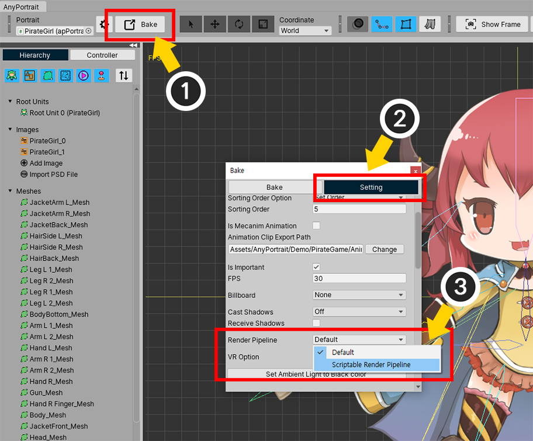
LWRPとURPの「クリッピングマスク」をレンダリングする方法が異なりますので、Bake設定で追加の作業をする必要があります。
(1) 「Bakeボタン」を押します。
(2) 「Settingタブ」を選択します。
(3) 「Render Pipeline」の項目の値を「Scriptable Render Pipeline」に変更します。

(1) 「Bakeタブ」を選択します。
(2) 「Bakeボタン」を押します。

ユニティシーンでキャラクターを確認してみると、URP環境で正常に表示されるのを見ることができます。
URP Litマテリアルを適用
「URP Lit」マテリアルを適用して、光の影響を受けるようにすることができます。

マテリアルライブラリを開きます。
(1) 「Make Material Setボタン」を押します。
(2) 「URP Lit」プリセットを選択して (3) 「Selectボタン」を押します。

(1) 生成された「URP Lit」マテリアルセットを選択します。
(2) 「Default Materialボタン」を押してデフォルト値に設定します。
すべての作業が終了したら、マテリアルライブラリを閉じます。

Bakeを実行して、ユニティシーンで確認してみましょう。
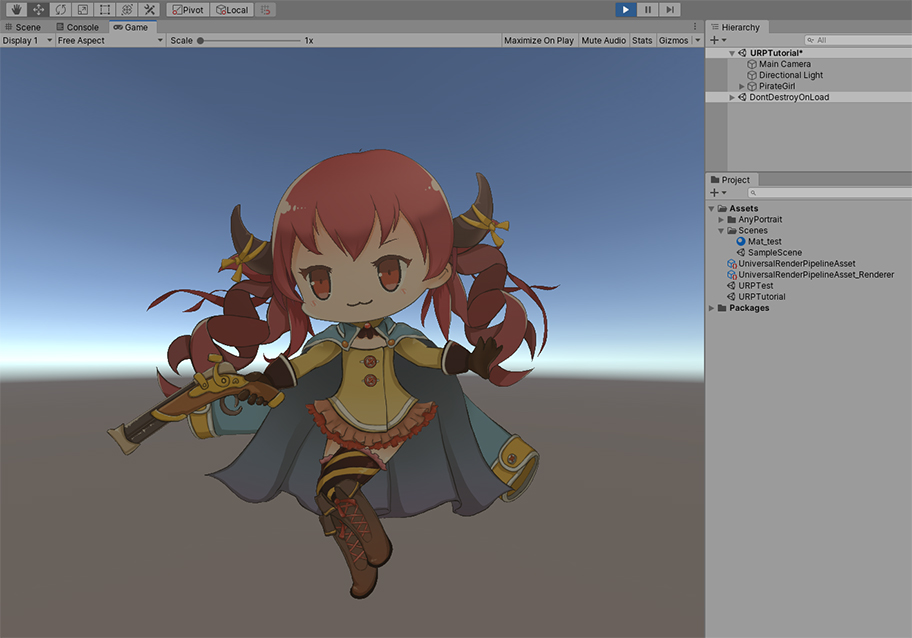
Unlitマテリアルが適用されたのとは異なり、上の画像のように多少暗くしたり、あるいはまったく黒キャラクターが出力されます。
Litマテリアルは、光がなければ暗くなるからです。

様々な種類のLightオブジェクトを追加してみましょう。

ゲームを実行すると、光が適用されたキャラクターを見ることができます。
2D Rendererが適用されたURPでレンダリングする
URPはLWRP 2Dの機能が含まれてする方式です。
簡単に「2D Renderer」を適用して2D Lightを利用するレンダリング方法で切り替えることが可能です。

2D Rendererアセットを作成します。
AssetsメニューやAssetsフォルダで右クリックをして、
「Create > Rendering > Universal Renderer Pipeline > 2D Renderer（Experimental）」を選択します。

新しい「2D Rendererアセット（New 2D Renderer Data）」が作成されました。

(1) 先に作成された「UniversalRenderPipelineAsset」を選択します。
(2) 「Renderer List」の項目に「2D Renderer（New 2D Renderer Data）」を割り当てます。
(3) 2D Rendererのためのマテリアルがまだ適用される前なので、ユニティシーンではまだ光が適用されません。
URP 2Dのためのマテリアルを作成しましょう。
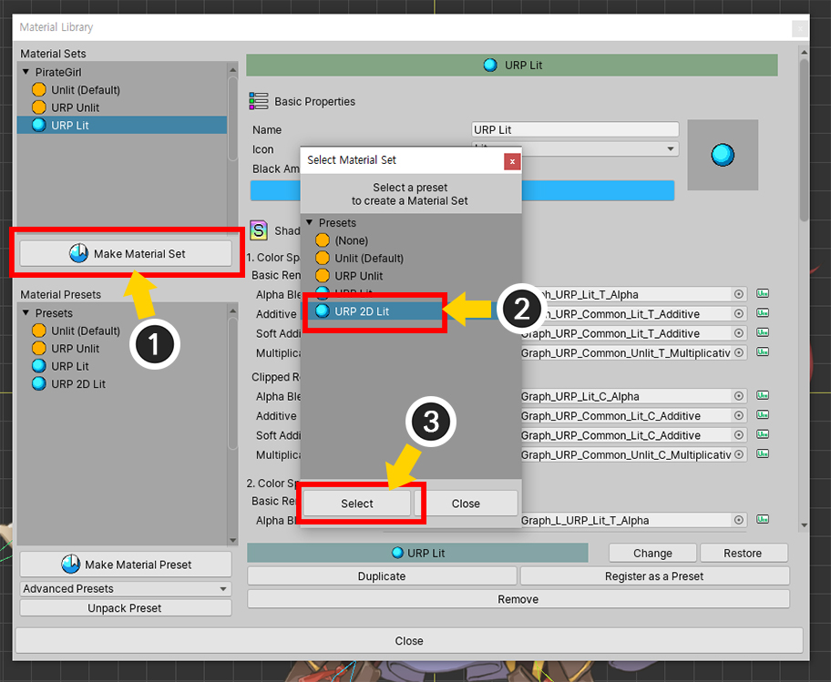
上記の方法とほぼ同じです。
(1) マテリアルライブラリを開き、「Make Material Setボタン」を押します。
(2) 今回は「URP 2D Lit」プリセットを選択して (3) 「Selectボタン」を押します。

(1) 生成された「URP 2D Lit」マテリアルセットを選択し、 (2) 「Default Materialボタン」を押してデフォルト値に設定します。

Bakeを実行して、ユニティシーンで確認してみましょう。

Litマテリアルを使用したので、光のないシーンでは、キャラクターが暗く表示されます。
現在、基本的なLightオブジェクトが配置された状態であるが、2D Rendererに合った別のLightオブジェクトが必要です。

2D Lightオブジェクトを追加します。
「Light > 2D」のカテゴリーに2D Rendererでサポートされている種類の「2D Light」があります。

2D Lightを配置します。

URP 2D環境でキャラクターが明るく表示されるのを見ることができます。
URPをサポートするShader Graphアセット
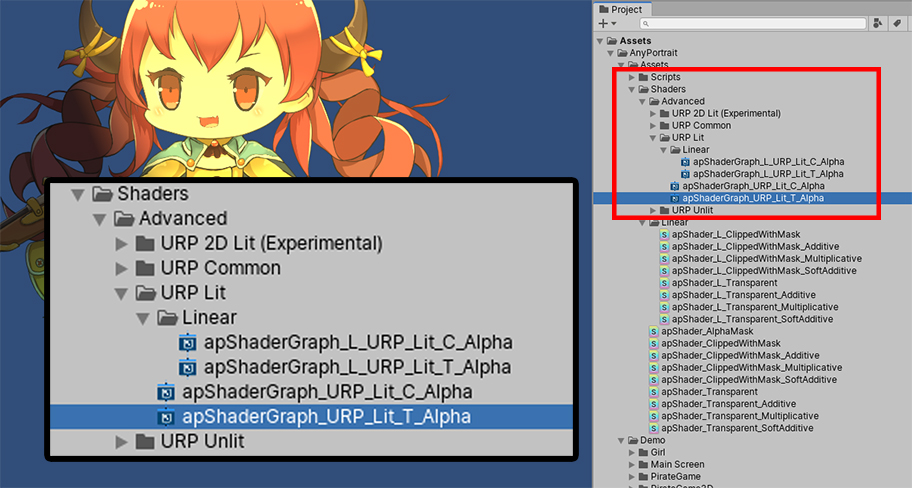
マテリアルライブラリからURP Presetsパッケージをインストールすれば、上記のようにURPのアセットが追加されます。
（Assets > AnyPortrait > Assets > Shaders > Advancedフォルダ）
このアセットは、Shader Graphで作成されました。

このアセットを開くと、Shader Graphの内容を見ることができます。
プリセットとして提供されているマテリアルは、基本的なライティングだけを実行します。
このアセットに基づいてShader Graphを作成して、様々なレンダリング手法を適用してみてください。
URPマテリアルの使用に関する注意事項
「URP」は、最新のバージョンである「Unity 2019.3」に導入された新機能です。
URPは利点が多いレンダリング方式であるが、以前のバージョンのアセットが互換性がないという大きな問題があります。
したがってAnyPortraitも、従来とは異なるShader Graphの形で作成されたアセットを提供しています。
ただし、Shader Graphの機能の制限により、次のような制約事項がありますので注意してください。
1) メッシュの「Blend」方式の「Soft Additive」方式がサポートされていません。代わりに、「Additive」のShaderが「Soft Additive」にも適用されます。
2) メッシュの「Blend」方式の「Multiplicative」方式は、「2X Multiply」はなく「Multiply」方法で計算されます。
3) 「URP 2D Lit」で「Additive（Soft Additive）、Multiplicative」方式のメッシュは、光の影響を受けません。
「Unity 2021」および最新バージョンをサポートする「URP（2021）プリセット」
1.3.5
Unity 2021の以前のバージョンでは、URPの多くの機能が「実験」段階でした。
そして「Unity 2021」からは、これらが正式な機能に変わり、いくつかの変更点ができました。
残念ながら、この変更によって、AnyPortraitが提供する既存の「URPマテリアルプリセット」が正常に動作しないという問題が発生しました。
AnyPortrait v1.3.5で追加された「URP（2021）プリセット」を使って問題を解決し、さらに追加されたマテリアルを試してみましょう。
このマテリアルプリセットは「Unity 2021」と「Unity 2022.a」で動作します。

新しい「URPプリセット」をインストールする方法も従来と同じです。
(1) 「マテリアルライブラリ」を開きます。
(2) プリセットパッケージリストを開き、 (3) 「URP（2021）Presets」を選択します。
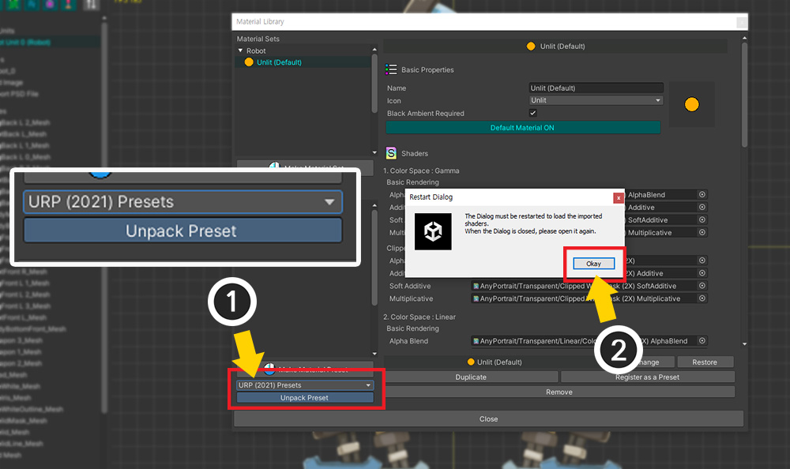
(1) 「URP(2021) Presets」を選択した状態で、「Unpack Preset」ボタンを押します。
(2) インストールガイドのメッセージが表示されます。 「Okay」ボタンを押します。

もう一度「マテリアルライブラリ」を開くと、「URP（2021）」に含まれている「マテリアルプリセット」がインストールされていることがわかります。
プリセットはそれぞれ次のようになります。
1. URP (2021) Unlit : 光の影響を受けない基本マテリアルです。
2. URP (2021) Lit : URPの基本レンダラーで光の影響を受けるマテリアルです。
3. URP (2021) Bumped Lit : URPのデフォルトのRendererでノーマルマップ（またはバンプマップ）を適用できるマテリアルです。
4. URP (2021) 2D Lit : URPの2D Rendererで光の影響を受けるマテリアルです。
5. URP (2021) 2D Bumped Lit : URPの2D Rendererでノーマルマップを適用できるマテリアルです。
6. URP (2021) Mergeable Unlit : URPで「マテリアルマージ」ができる光の影響を受けないマテリアルです。
7. URP (2021) Mergeable 2D Lit : URPの2D Rendererで「マテリアルマージ」ができる光の影響を受けるマテリアルです。
参考
「Mergeableプリセット」については、関連ページを参照してください。
ほとんどの「マテリアルプリセット」は、従来の「URPプリセット」とほぼ同じように動作します。
特に、「Unlit、Lit、2D Lit」プリセットは従来と同じです。
以下では、基本的な使い方と「URP（2021）パッケージ」で追加されたマテリアルについて説明します。

まず、「Unlit」マテリアルをまず適用してみましょう。
(1) 「Make Material Set」ボタンを押します。
(2) 「URP(2021) Unlit」を選択します。

(1) 追加した「マテリアルセット」を選択します。
(2) 「Default Material」ボタンを押して「ON」に設定します。

(1) 「Bake」ダイアログを開きます。
(2) 「Setting」タブを選択します。
(3) 「Render Pipeline」オプションの値を「Scriptable Render Pipeline」に変更します。

(1) 設定が完了したら、Bakeを実行します。

上記のように、URP環境で正常にレンダリングされることがわかります。
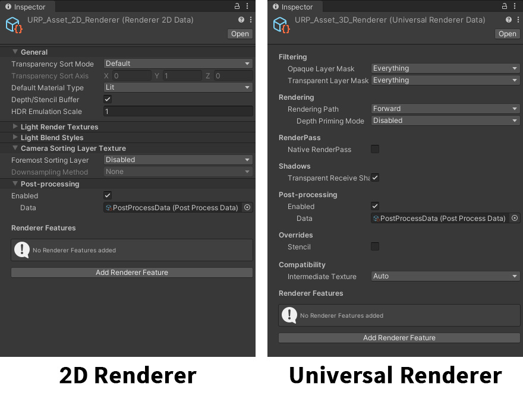
Unlitではなく、「光の影響を受けるマテリアル」を使用する場合は、以前のバージョンのURPと同様に、「Renderer」に従って他のマテリアルを使用する必要があります。
URPは、上記のように2種類の「Renderer」のいずれかを選択してレンダリングを行います。
新しく追加された「Bumped Lit」マテリアルの使い方をそれぞれの「Renderer」に合わせて説明します。
「2D Renderer（別名URP 2D）」を使用する環境での「Bumped Lit」マテリアルの使い方をまずお知らせします。
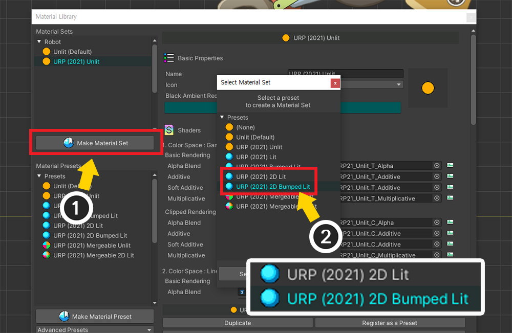
(1) 「Make Material Set」ボタンを押します。
(2) 「URP 2D」環境では、「URP(2021) 2D Lit」または「URP(2021) 2D Bumped Lit」を利用できます。 このページでは「URP (2021 2D Bumped Lit)」」をご利用いたします。
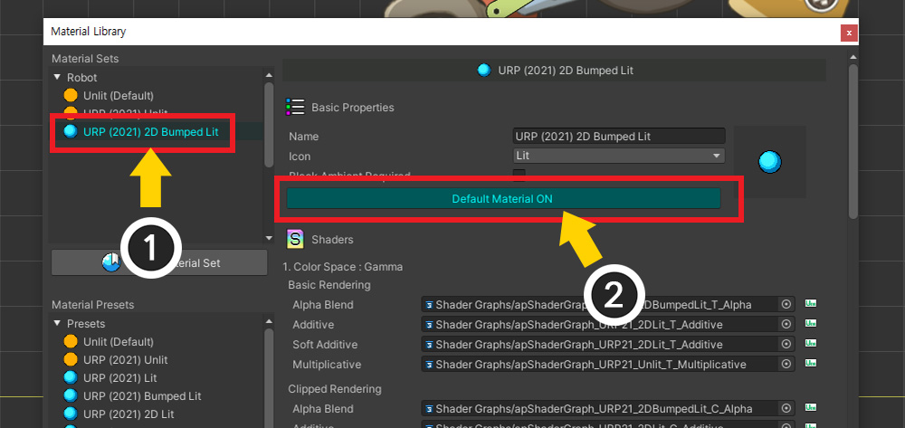
(1) 追加した「マテリアルセット」を選択します。
(2) 「Default Material」を「ON」にしてください。
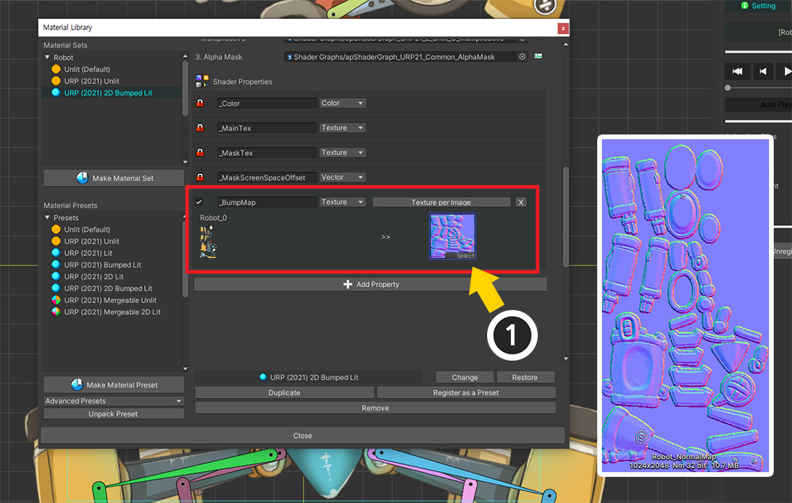
このマテリアルセットには「_BumpMap」という属性が追加されています。
(1) 画像に合うノーマルマップをそれぞれ指定します。

「Bake」をしてUnityシーンを開きます。
法線マップを確認するには、光を追加する必要があります。
(1) 「Hierarchy」で「右クリック」を行います。
(2) 「Light」の項目に「Light 2D」オブジェクトが表示されます。 まず、「Global Light 2D」を選択して追加しましょう。
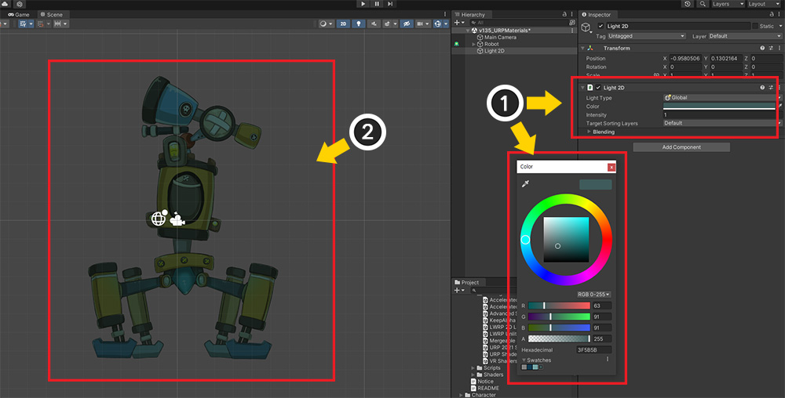
(1) 追加した「Light 2D」を選択して色を変更します。
(2) キャラクターが光の色に合わせてレンダリングされるのを見ることができます。
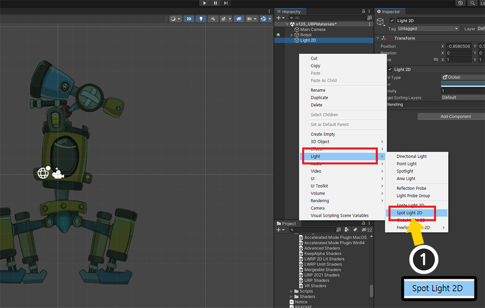
以下はノーマルマップによる体積感を確認しましょう。
(1) 方向性を持つ「Spot Light 2D」を追加します。

(1) 光を配置し、範囲や方向などを設定します。
(2) 光の色を設定します。
(3) 「Normal Maps」の「Quality」オプションの値を「Fast」または「Accurate」に変更します。

ノーマルマップによって体積感を持ち、レンダリングされるキャラクターを見ることができます。

「2D Lit」マテリアルプリセットのレンダリング結果と比較してみてください。
マテリアルによっては、レンダリング結果が異なることがわかります。
「2D Renderer」ではなく「Universal Renderer」が設定された環境でのマテリアルを設定しましょう。
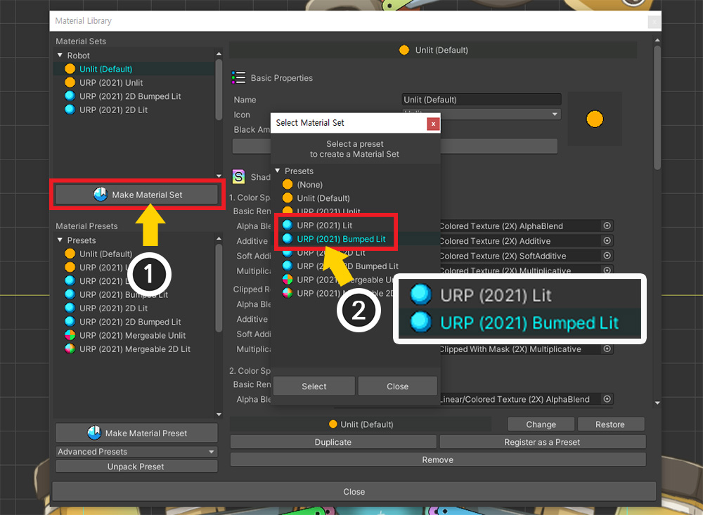
(1) 「Make Material Set」ボタンを押します。
(2) 「URP(2021) Lit」または「URP(2021) Bumped Lit」を選択できます。 ここでは「URP (2021) Bumped Lit」を選択してみましょう。

残りのプロセスは同じです。
生成された「マテリアルセット」を基本に設定し、「ノーマルマップ」を指定した後、「Bake」を実行してください。

「URP 2D」とは異なり、一般的に使用される「Directional Light」や「Point Light」を利用できます。
光を適切にシーンに配置してください。
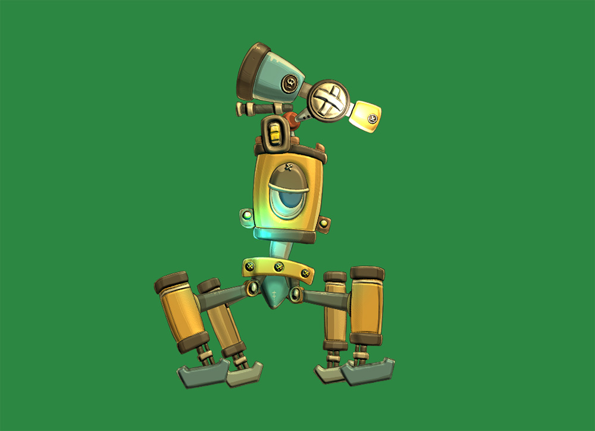
「ノーマルマップ」が適用されたレンダリング結果を確認できます。